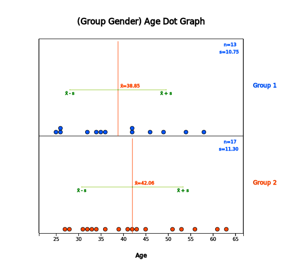
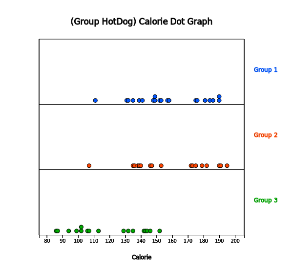

Chapter 3. Visualization of Quantitative Data
3.2 Visualization of Single Quantitative Variable
[presentation] [video]
In case of the quantitative data, raw data are directly used to visualize the data. Visualization of the quantitative data is discussed by separating cases of the data without group and with group.
3.2.1 Visualization of Quantitative Data without Group
The following data show lengths of 30 otters. Use 『eStat』 to draw a dot graph, a histogram, a stem and leaf plot. (unit cm)
Answer
|
Enter all 30 data into V1 column of the sheet in 『eStat』 system and specify the variable name of V1 as ‘OtterLength’. This data can also be found at the following location
[Ex] ⇨ eBook ⇨ EX030201_Continuous_OtterLength.csv Click on the dot graph icon and click the variable name, 'OtterLength', then a dot graph of the otter length will be appeared in the Graph Area as in <Figure 3.2.1>. You can also select 'OtterLength' variable at the selection box of the Analysis Variable. |

Checking the 'Mean/Std Dev' in the options window below the graph shows the average of the data and the (average) ± (one standard deviation) interval as in <Figure 3.2.2>. We can observe that large number of data can be found around the aveage and the data are distributed symmetrically around the average.

Click on the histogram icon  to display the graph as in <Figure 3.2.3>. If you check the options of ‘Mean’, ‘Frequency’ and ‘Frequency Polygon’ below the graph, the histogram is changed as in <Figure 3.2.4>. You can also observe that there are large amount of data near the mean and the data are distributed in almost symmetrical form around the mean.
to display the graph as in <Figure 3.2.3>. If you check the options of ‘Mean’, ‘Frequency’ and ‘Frequency Polygon’ below the graph, the histogram is changed as in <Figure 3.2.4>. You can also observe that there are large amount of data near the mean and the data are distributed in almost symmetrical form around the mean.


Click on the [Frequency Table] button  in the options window below the graph (Figure 3.2.5) to output a frequency table by intervals based on the histogram currently drawn in the Log Area as in <Figure 3.2.6>.
in the options window below the graph (Figure 3.2.5) to output a frequency table by intervals based on the histogram currently drawn in the Log Area as in <Figure 3.2.6>.

The number and the width of the intervals in the histogram are automatically calculated by 『eStat』 system, but you can redraw them by specifying the ‘Interval Start’ and ‘Interval Width’ from the option below the graph and then clicking [Execute New Interval] button in <Figure 3.2.5>.
Click on the stem and leaf plot icon to display the graph shown in <Figure 3.2.7>. This graph is a variant of the histogram where intervals are [60, 61), [61, 62), ... , [78, 79). After finding the number of data belonging to each interval, the digits of 60, 61, ... , 78 become the stem of the graph and the last digits of all data values belonging to each interval become the leaves of each stem. The leaves (last digits) of each stem are sorted in ascending order from small to large.

|
Practice 3.2.1 (Bicycle Road in Seoul) The following data are the lengths of bike-only roads in Seoul's 25 administrative districts as of 2016. Use 『eStat』 to draw a dot graph, a histogram, a stem and leaf plot. Analyze the graphs.
0.0 0.0 1.5 0.6 0.0 1.4 3.1 0.3 0.1 0.7 0.8 0.0 0.4 2.8 16.1
8.1 1.5 3.8 4.6 0.0 2.9 0.0 4.4 18.4 3.3
(unit km, Seoul City information system, 2016)
Saved at [Ex] ⇨ eBook ⇨ PR030201_Continuous_BikeRoad.csv |
|
Practice 3.2.2 (Lengths of Major North American Rivers) The lengths (in miles) of 141 major rivers in North America compiled by the US ecological Survey are saved at the following location of 『eStat』.
[Ex] ⇨ eBook ⇨ PR030202_Rdatasets_rivers.csv
Use 『eStat』 to draw a dot graph, a histogram, a stem and leaf plot. Analyze the graphs. |
|
Practice 3.2.3 (Annual Precipitation in US Cities) The average amount of precipitation (rainfall) in inches for each of 70 United States (and Puerto Rico) cities are saved at the following location of 『eStat』.
[Ex] ⇨ eBook ⇨ PR030203_Rdatasets_Precip.csv
Use 『eStat』 to draw a dot graph, a histogram, a stem and leaf plot. Analyze the graphs. |
3.2.2 Visualization of Quantitative Data with Group
In a middle school, the age and gender of all teachers are surveyed. The data are saved at the following location of 『eStat』.
[Ex] ⇨ eBook ⇨ EX030202 Continuous_TeacherAgeByGender.csv.
Using this data, draw a dot graph, a histogram, a stem and leaf plot of the age by gender.
Answer
|
Select the file from 『eStat』 by clicking
[Ex] ⇨ eBook ⇨ EX030202 Continuous_TeacherAgeByGender.csv.
or scan the QR. Click on the dot graph icon and click the variable names 'age' and 'gender' to draw the dot graph of the age by gender as in <Figure 3.2.8>. You can select ‘Age’ from the selection box of 'Analysis Var' and ‘Gender’ from the selection box of ‘By Group’ variable. |

By checking the 'Mean/StdDev’ in the options window below the graph, the mean line and (average) ± (one standard deviation) intervals are shown on the graph as in <Figure 3.2.9>.

By looking at the dot graph in <Figure 3.2.9>, the average age of the female teachers is higher than the male teachers. If this data are sampled from two populations, a statistical analysis of testing hypothesis to compare two population means can be applied. It will be discussed in Chapter 8.
If you click on the histogram icon  ,
the histogram as in <Figure 3.2.10> appears in the Graph Area. By checking the options below the graph, you can draw the mean lines, frequencies, and frequency polygons on the histogram (<Figure 3.2.11>). If you click [Frequency Table] button, the frequency table of the histogram can be displayed in the Log Area as in <Figure 3.2.12>.
,
the histogram as in <Figure 3.2.10> appears in the Graph Area. By checking the options below the graph, you can draw the mean lines, frequencies, and frequency polygons on the histogram (<Figure 3.2.11>). If you click [Frequency Table] button, the frequency table of the histogram can be displayed in the Log Area as in <Figure 3.2.12>.
『eStat』 calculates the number and the width of the intervals automatically, but you can redraw them by specifying the ‘Interval Start’ and ‘Interval Width’ in the options window below the graph.


If you click on the stem and leaf plot icon , the graph as in <Figure 3.2.13> will be displayed in the Graph Area. This stem and leaf plot is a variant of the histogram in which the age data are divided into intervals as [20, 30), [30, 40), ... [60,70) by using the possible decimal digits of 10s as the stem. The age data belonging to each interval are investigated and displayed using the last digit of the age as the leaf. The last digits (leaf) of the age are sorted in ascending order from small to large.
In case of two groups, a bi-lateral stem and leaf plot as in <Figure 3.2.14> can be drawn
by clicking on the bi-lateral stem and leaf icon
 .
.


The calorie data of the hot dogs made by three ingredients (1: beef, 2: pork, 3: chicken) are surveyed and saved at the following location of 『eStat』.
[Ex] ⇨ eBook ⇨ EX030203_Continuous_CalorieByHotdog.csv.
Using 『eStat』 , compare the calories of the three hotdog types using a dot graph, a histogram and, a stem and leaf plot.
Answer
|
Retrieve the file from 『eStat』 by clicking
[Ex] ⇨ eBook ⇨ EX030203_Continuous_CalorieByHotdog.csv. or scan the QR on the left. Click on the dot graph icon and then select the variable 'Calorie' and 'Hot Dog' to draw a dot graph as in<Figure 3.2.15>. You can also select ‘Calorie’ in the 'Analysis Var' selection box and ‘HotDog’ in the 'By Group' selection box. |

Checking 'Mean/StdDev' in the options window below the graph will show (mean) ± (one standard deviation) intervals as shown in <Figure 3.2.16>.
If you look at the dot graph of the calories of the hot dog, the hot dogs made from chicken are lower calories than those made from beef and pork. If this data are sampled from three populations, a statistical analysis of testing hypothesis to compare several population means can be applied. It will be discussed in Chapter 9.

Click on the histogram icon
 to display the graph shown in <Figure 3.2.17>. Under the options below the graph, you can draw means, frequency, and frequency polygon as in <Figure 3.2.18> and frequency table as in <Figure 3.2.19> in the Log Area.
to display the graph shown in <Figure 3.2.17>. Under the options below the graph, you can draw means, frequency, and frequency polygon as in <Figure 3.2.18> and frequency table as in <Figure 3.2.19> in the Log Area.


The histogram of 『eStat』 calculates the number of intervals and the width of the intervals automatically, but you can redraw them by specifying the 'Interval Start' and 'Interval Width.
Click on the stem and leaf plot icon to display the graph shown in <Figure 3.2.20> This graph is a variant of the histogram which the calories are divided into intervals [80, 90), [90, 100), ... , [190, 200) as the stem in each group. The data belonging to each interval are investigated and displayed as the leaves with the last digits of the data values. The leaves in each interval are sorted in ascending order from small to large. In case of many groups, the stem and leaf plot may overflow the screen as shown in <Figure 3.2.20> (only two groups are visible here). You can move the scroll bar of the screen to watch all the stem and leaf plot.

Move scroll bar to see all graph
|
Practice 3.2.4 (Oral Cleanliness by Brushing Methods) Oral cleanliness scores according to the brushing method (1:basic method, 2: rotation method) are examined and stored at the following location of 『eStat』.
[Ex] ⇨ eBook ⇨ PR030204_Continuous_ToothCleanByBrushMethod.csv.
Using 『eStat』 , draw a dot graph, a histogram, a stem and leaf plot of the oral cleanliness by the brushing method. |
|
Practice 3.2.5 (Plant Growth by Condition) Results from an experiment to compare yields (as measured by dried weight of plants) are obtained under a control (leveled ‘ctrl’) and two different treatment conditions (leveled ‘trt1’ and ‘trt2’). The weights data with 30 observations on each of control and two treatments (‘crtl’, ‘trt1’, ‘trt2’) are saved at the following location of 『eStat』.
[Ex] ⇨ eBook ⇨ PR030205_Rdatasets_PlantGrowth.csv
Use 『eStat』 to draw a dot graph, a histogram, a stem and leaf plot of the weights by three groups. |
|
Practice 3.2.6 (Effectiveness of Insect Sprays) The counts of insects in agricultural experimental units treated with six different insecticides. Data with 72 observations on 2 variables, insect count and sprays (A, B, C, D, E, F), are saved at the following location of 『eStat』. (Source: Beall, G., (1942) The Transformation of data from entomological field experiments, Biometrika, 29, 243–262.)
[Ex] ⇨ eBook ⇨ PR030206_Rdatasets_InsectSprays.csv
Use 『eStat』 to draw a dot graph, a histogram, a stem and leaf plot of the insect counts by the types of sprays. |